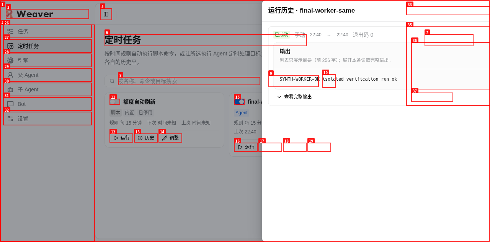
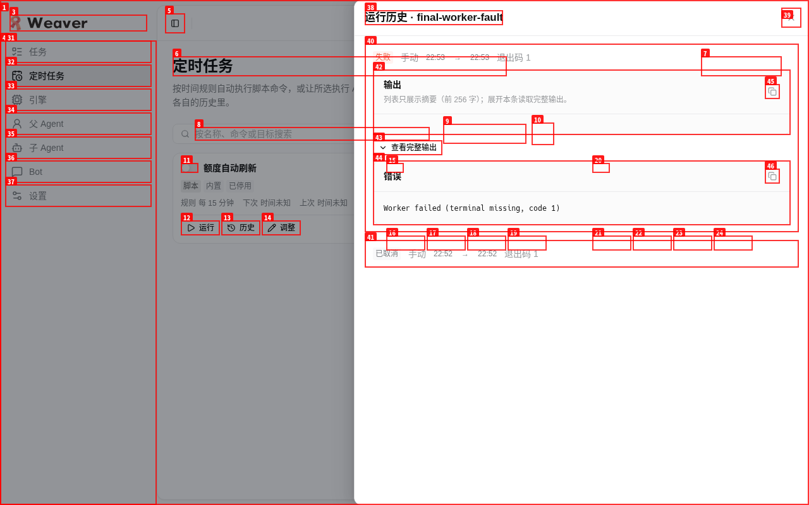
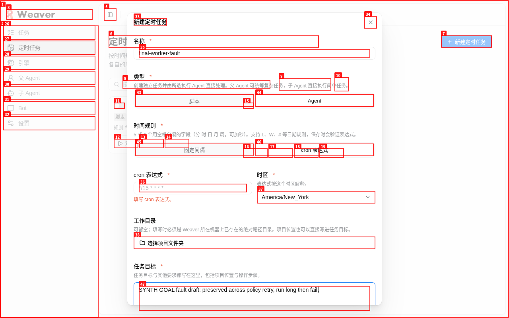
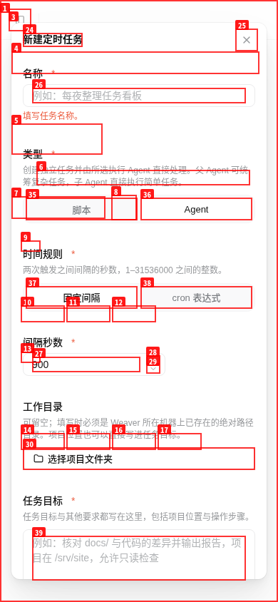

PASS · 6/6 项已在真浏览器执行通过
任务 9db6a6d2-ab93-4f53-9f45-1b33343d81cc · 日期 2026-10-22（UTC）· 被测版本：冻结 manifest owner-schedules-source-frozen.json（frozen=true，36 文件），HEAD 7170c35。开始与结束两次全量 sha256 核对均为 0 不一致，验收期间无产品源码并发修改（manifest 外的脏文件均为验证输出与此前已存在的非产品文件，mtime 均早于本任务）。上一轮 1963141a 的 prep-only 未执行报告已被本轮实际行为结果取代，其轮询记录移入 proof/history/ 标为历史。
http://127.0.0.1:44573（确定性故障代理）→ 真实私有 runtime http://127.0.0.1:38267。两者均为本任务 systemd scope（8G/10G/control-group），已停止并验证释放。startRuntime（真实 TaskStore / PolicyStore / CommandHandler / ScheduleService / HTTP + store），外部模型 CLI 为任务合成 bin/codex（走真实 default startCli + 真实 systemd scope），ownerHost 为 fake 收据边界（从未启动真实模型，未碰生产数据）。quota 探针短路为本地 get，free-channel 探测关闭，IM 的 parent/channel 工厂直接抛错。getPolicy 500 外全部 200。/#/schedules 真网页执行）| 项 | 状态 | 实际证据 |
|---|---|---|
| 1 新建 Agent 界面：父/子全量可搜，同 ID 按 role 区分并正确编码，不可用 disabled，表单仅任务目标（无 AC/约束），cwd 无必选，桌面 + 390 无横向溢出 | PASS | 下拉列出全部 11 配置；搜索 same 只剩父/子两项并分别选中（值 owner:same / worker:same）；不可用项全部 disabled；保存键在无效执行配置下保持禁用。scrollWidth==clientWidth：桌面 1280 与 390（含弹窗）均为 0 溢出。截图 item1-executor-desktop/item1-list-390/item1-modal-390.png。 |
| 2 网页创建 worker 调度（cwd 留空）→ 真实 API/存储定义无 workspace、executor 正确 → 手动运行 → 历史 succeeded、active 解除、任务总数 0 新增 | PASS | 创建 final-worker-same（worker/same），存储定义无 workspace 键。网页运行后历史 已成功（manual，exit 0，输出 SYNTH-WORKER-OK），activeRunId 清除，tasks.list 总数保持 0。合成 marker 证明真实 codex exec 启动、prompt 绑定本私有实例、role/model/effort 映射正确、中性 cwd 为 schedule-workspaces/<id>。截图 item2-history-desktop.png，proof item2-item3-transcribed.json。 |
| 3 编辑填私有 demo 目录 → allowClear 清空持久化 undefined → 运行走 neutral cwd、旧冻结执行保留原 path → 删除不带走业务输出 | PASS | 目录 picker 逐级选到 /tmp/sf9db6a6/demo 保存（rev2 store 有值）；allowClear 保存后存储键消失（rev3/5）；显式 cwd 运行 marker 落 demo，清空后运行 marker 落中性目录；删除调度后两处 marker 均保留，随后整根回收。截图 item3-picker-desktop.png。 |
| 4 available parent（codex_owner）创建 owner 记录 → run 走 root/tasks.start + ownerHost receipt；worker 无 root 映射 | PASS | 存储 executor={role:owner,profileId:codex_owner}。网页运行后产生 root 任务 4fe64333（running），owner-browser-verification.json 保留了从本任务工具记录恢复的真接口 fake 收据（engineKind codex，fixture-* 合成内容）；worker 运行从不建任务，对比成立。随后网页取消 → 历史 已取消、claim 解除。未启动真实模型是唯一合成边界，已如实记录。截图 item4-list-desktop.png，proof final-owner-runs.json / owner-browser-verification.json。 |
| 5 policy.get 故障 inline error + retry、草稿保留、无效 executor 禁提交、恢复后重拉保存；已删保存值回显禁改 execution；启停不受阻断 | PASS | 故障期弹窗内联 POLICY_FAULT: synthetic policy.get failure + 重试键，必填错误保持，创建禁用；填草稿后恢复故障点重试，草稿完整保留并可选创建。私有策略删除 sched_worker 后编辑回显 已删除或不可用 + 禁止提交（列表启停仍可用）；恢复策略后回显消失可继续保存。截图 item5-fault/item5-deleted-echo-desktop.png，故障快照摘录见 owner-browser-verification.json（原始代理日志未保留）。 |
| 6 长跑合成 CLI 网页取消 → 历史 cancelled/active 清；缺 native terminal → failed 有清晰原因（API 规范化退出码为 1） | PASS | long 场景运行出现真实 scope weaver-cli-codex-cdee79fc.scope（8G/10G/control-group）含 CLI 父子进程；网页停止后历史 已取消、进程全灭、scope 消失、marker 仅 1 行（无重放）。missing-terminal 场景历史 失败：Worker failed (terminal missing, code 1)，输出为空，不冒充成功。截图 item6-running/cancelled/failed-desktop.png，proof final-worker-runs.json。 |
bin/codex（success / missing-terminal / long 三场景 + marker/cwd 探针）；ownerHost = fake 收据。两者均只替代外部智能，不替代任何内部服务/DB/命令/scope 语义。getPolicy 返回确定性 500，其余全部直通真实 runtime；无 window.weaver 伪造、无 quota/freeprobe/IM、无生产 DB/credentials、无真实模型工程任务。dev-sched-final-svc / dev-sched-final-proxy（8G/10G/control-group，已停止，unit/cgroup/PID/port 释放，PIDs 438821/457500 已死端口 38267/44573 已空）；任务浏览器已 closeprofile 已删；运行期 scope weaver-cli-codex-cdee79fc 已消失。/tmp/sf9db6a6 整根（隔离 DB/workspace/demo/输出）、临时根内 dataDir/rendererRoot/demo 内容/ctl marker+child/ready.json/运行日志/占位脚本；借用：无共享服务（4737/4738 未碰）无真实数据无 profile 复用。docs/verification/schedules/REPORT.html（本报告）、proof/*.json（含恢复的 owner 收据和故障快照）+ history/、screenshots/*.png；HAR/raw console 未产生且均不含 secrets。artifact_errors：无。
worker 手动运行历史：已成功，输出 SYNTH-WORKER-OK。

缺 terminal 失败历史：失败原因清晰，无成功冒充。

policy 故障：内联错误 + 重试，草稿保留。

390 弹窗：无横向溢出，目标表单精简。
screenshots/item1-executor-desktop.png（执行选项全量）、item1-list-390.png（列表 390 无溢出）、item3-picker-desktop.png（目录 picker 选定 demo）、item4-list-desktop.png（owner 已取消）、item5-deleted-echo-desktop.png（已删回显）、item6-running/cancelled-desktop.png（长跑与取消）。proof/summary.json（APP_URL/hash/计数/unit/映射/清理）、final-*.json（真实 API 快照）、item2-item3-transcribed.json（已删调度的转录观测 + marker 原文）。报告可直接 file:// 打开。
审阅注：部分已删除定时记录以标注转录的实际观察留证；原始 owner/代理日志已回收，独立审阅从本任务专属工具记录恢复了最小收据与故障提示摘录，未读取思考内容或无关会话。